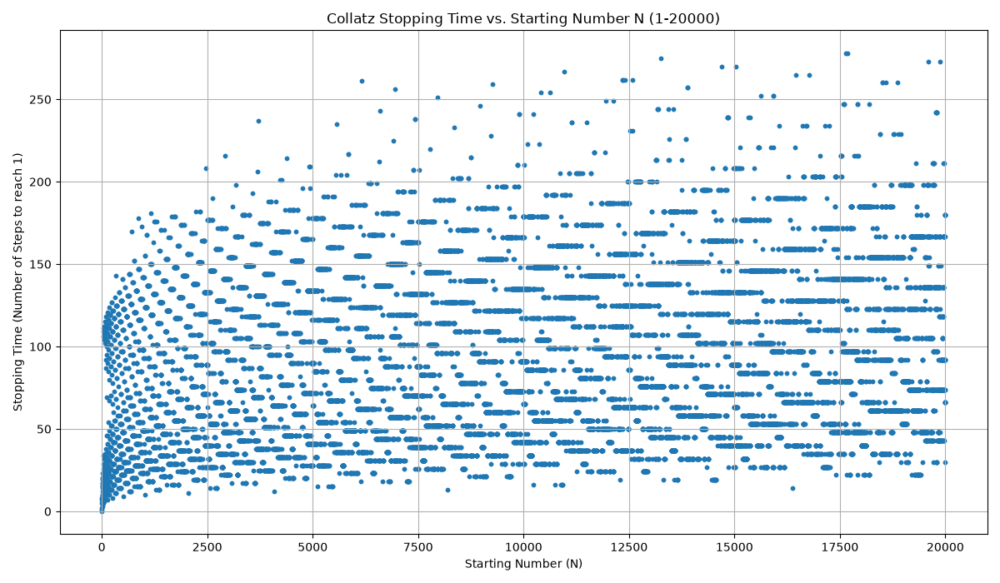
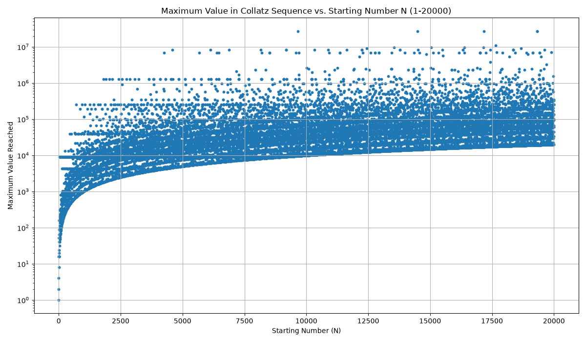
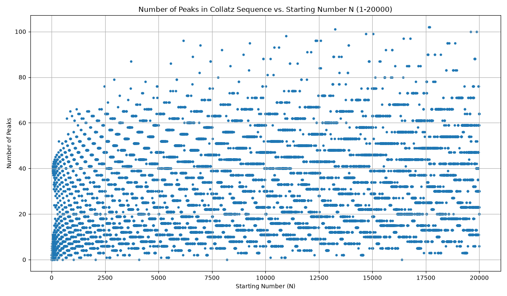

This report presents an analysis of the Collatz Conjecture for starting numbers (N) from 1 to 20000. The Collatz conjecture states that if you start with any positive integer N and repeatedly apply the following rules, you will eventually reach 1:
We analyze three key properties of the Collatz sequences:
This scatter plot illustrates the relationship between the starting number N and its corresponding stopping time (the number of steps to reach 1). We can observe the erratic nature of the stopping time, with no immediately obvious pattern, consistent with the conjecture's unsolved status.

This plot shows the maximum value attained within each Collatz sequence for a given starting number N. A logarithmic scale is used for the y-axis due to the wide range of maximum values. This plot highlights how quickly some sequences can grow to very large numbers before eventually descending to 1.

This scatter plot displays the number of "peaks" (local maxima, excluding the first and last elements) found in each Collatz sequence. This metric provides insight into the "hilliness" or oscillatory behavior of the sequences before they converge to 1.
